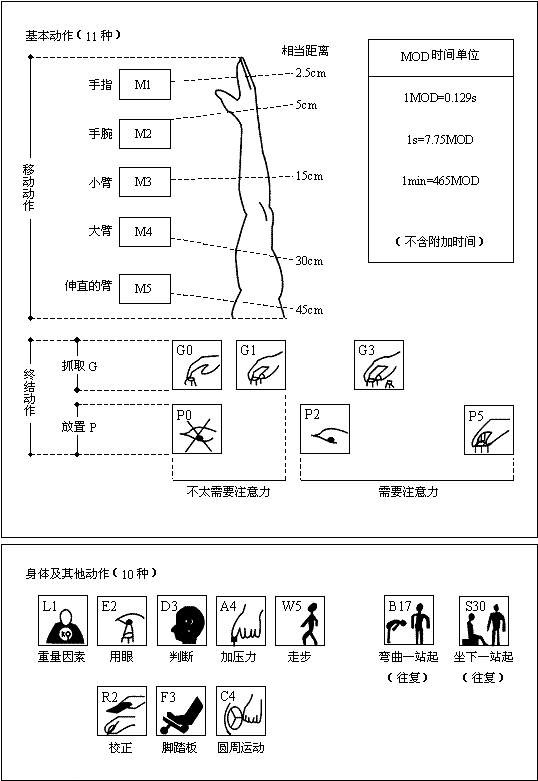

1 . 教学安排
2 . 预定时间标准的定义、特点及用途
3 . 方法时间衡量
4 . 模特法及其应用实例
 模特法原理
模特法原理
模特法的时间单位
模特法的特点
模特法动作分类
模特法的动作分析
动作分析时使用的其他符号
模特法分析记录表
动作的改进
模特法应用及标准时间制定
5 . 思考与练习题
 返回课程学习首页
返回课程学习首页
模特法的特点
(一)简单易学
(1)模特法的基本动作仅21种，用一张模特排时法基本图就可全部表示，见图11-2，图上21个方形表示21个动作。21种动作又分基本动作11种，身体及其他动作10种。基本动作又分移动动作(M)、抓取(G)、放置(P)。每个动作在右边的数字表示模特的时间值。下部10种动作表示身体及其他方面的动作，同时也反映时间值。这样一张基本示意图就表达了模特分析的基本动作，“一看即懂”。

图11-2 模特排时法基本图示意
(2)模特法把动作符号与时间值融为一体。MOD符号既表示了动作的性质，同时也表示了动作的MOD数，因此只要知道动作的符号，就可计算出其时间值。
(3)在模特法的21种动作中，不同的时间值只有8个(0、1、2、3、4、5、17、30)，且均为整数，计算方便。
(二)实用性强
(1)模特法不需测时与评比，由动作决定正常时间。因此比其他PTS法容易，见效快。
(2)在实际使用中，还可根据企业自身情况决定其单位时间值的大小。
(3)用模特法的时间值计算动作时间的精度，并不低于其他的PTS法。